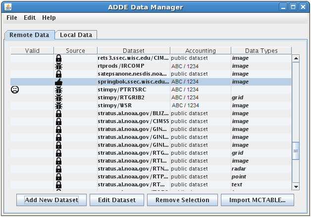
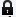
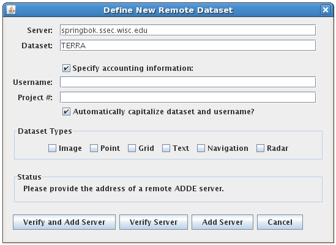
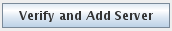
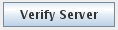
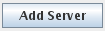
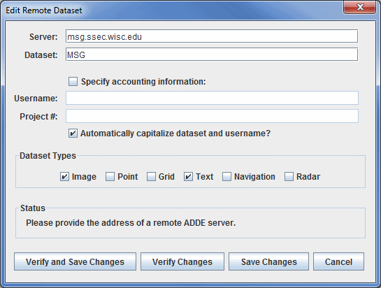
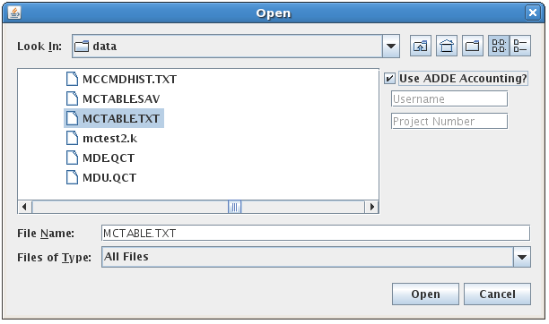
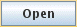

The Local and Remote ADDE Data Managers are accessible in the Main Display window through the Tools->Manage ADDE Datasets menu item. Click the Remote Data tab to manage access to data on other workstations, or the Local Data tab to manage access to data on your workstation. Continue below for more information about the Remote ADDE Data Manager, or go to the Local ADDE Data Manager page for more information.
Viewing the Existing Remote Datasets

Image 1: Remote ADDE Data Manager
The Remote ADDE Data Manager lets you add, delete or edit access to remote datasets that are available through the Satellite->Imagery chooser. You can also import a MCTABLE.TXT file that contains a preexisting set of entries for the Remote ADDE Data Manager.
The columns in the table are defined below.
- Valid - An empty column (no icon) means that the entry passed a verification check (the specified dataset and data type exists on the server) when it was added. A sad-face icon () indicates that the entry failed the verification check and thus will not work if you attempt to access data from the dataset. Once a MCTABLE is imported, this column will change to saying 'Checking...' while the datasets are being verified. If the dataset is valid, this column will be empty, or a sad-face icon will appear if there is a problem verifying the dataset.
- Source - Indicates the source of the entry. System entries () are ones supplied in the McIDAS-V package and thus are not editable. User entries () are ones that were added by the user and thus are editable. MCTABLE entries () are ones that were added by importing MCTABLE.TXT file and are also editable.
- Dataset - Lists the server IP address and dataset name for the entry. When you access the dataset (by pressing the Connect button in the Data Explorer), an ADDE request is sent to the server, which then returns the requested data.
- Accounting - Indicates whether the entry includes accounting information (username and project number) for the server. These are the values specified in the Username and Project # fields in the Define New Remote Dataset window that appears when the Add New Dataset button is clicked. If accounting information was not specified, then the Accounting field entry says "public dataset".
- Data Types - Indicates the values that were selected in the Dataset Types section in the Define New Remote Dataset window that appears when the Add New Dataset button is clicked.
The rows in this window are listed in the alphabetical order of the datasets by default, and this order can be reversed by clicking on the name of the column ('Dataset'). Each column can be sorted alphabetically by clicking on the name of the column. At the bottom of this window, there is a status message that lets you know if local servers are running and does not affect remote servers. For more information this, please see Local ADDE Data Manager.
The four buttons at the bottom of the window are described in the corresponding section below.
Adding a New Remote Dataset
The window below appears if you click the Add New Dataset button or select the File->New Remote Dataset menu in the ADDE Data Manager window.

Image 2:Add Remote Dataset Window
The Add Remote Dataset window lets you add access to remote datasets so they are available through the Data Explorer.
The fields and buttons are defined below.
- Server - Represents the IP address of the server workstation.
- Dataset - Represents the ADDE dataset name. In McIDAS-X, this is often called the ADDE group name.
- Specify accounting information - Enables text entry into the fields if the server uses ADDE accounting to require the user to enter a username and project number to access the dataset. If the dataset is a public dataset, meaning that the server allows users to access the dataset without specifying a username and project number, then leave this box unchecked. If you are unsure whether it's a public dataset or one that requires a username and project number, click the Verify Server button and the Status field will say "Incorrect accounting information", and the Username and Project # fields will be highlighted in pink if a username and project number are required.
- Username and Project # - Sets the username and project number required to be granted access to a dataset on a server that uses ADDE accounting to limit access to specific users. The valid usernames and project numbers for each server are assigned and maintained by the server administrator.
- Dataset Types - Sets each of the types of data in the dataset. To find which types are available, click the Verify Server button and it will check the box of each available type.
- Status - Indicates the status and provides instructions.
- 
- Contacts the server and verifies that the valid dataset exists. Then, if everything is passes the verification tests, the new entry is added to the Remote ADDE Data Manager containing the information specified in this window. If the dataset is not valid, the Status will read "Dataset does not appear to be valid", and the Dataset field will be highlighted in pink. If there are problems connecting to the server listed, then the Status will read "Could not connect to the given server", and the Server field will be highlighted in pink.
-  - Contacts the server and verifies that the valid dataset exists. Then, if everything is passes the verification tests, it adds a new entry to the Remote ADDE Data Manager containing the information specified in this window. If the dataset is not valid, the Status will read "Dataset does not appear to be valid", and the Dataset field will be highlighted in pink. If there are problems connecting to the server listed, then the Status will read "Could not connect to the given server", and the Server field will be highlighted in pink.
-  - Adds a new entry to the Remote ADDE Data Manager containing the information specified in this window. This option does not do any verification testing, so it's possible to add an incorrect dataset name, username, project number,etc.
 - Closes the window and discards any information that was entered.
- Closes the window and discards any information that was entered.
Editing an Existing Remote Dataset
If you highlight an editable entry in the ADDE Data Manager window and then click the Edit Dataset button, the window and fields are the same as above, except that the window title is Edit Remote Dataset and the bottom buttons say Verify and Save Changes, Verify Changes, and Save Changes (rather than Verify and Add Server, Verify Server, and Add Server).

Image 3: Edit Remote Dataset Window
Note that you cannot edit any of the remote datasets that come with McIDAS-V.
Removing an Existing Remote Dataset
If you highlight an editable entry in the ADDE Data Manager window and then click the Remove Selection button, it immediately removes the entry from the table. There is no recovery option, so if you accidentally remove an entry you need, you will have to remake the entry using the Add New Dataset button. Note that you cannot remove any of the native remote datasets that come with McIDAS-V.
The window below appears if you click the IMPORT MCTABLE... button in the Remote ADDE Data Manager window.

Image 4: Import MCTABLE Window
This window lets you import a MCTABLE.TXT file that contains a preexisting set of entries for the Remote ADDE Data Manager. For example, McIDAS-X users may have added access to many servers via the DATALOC command. Those entries are stored in the MCTABLE.TXT file, which can be imported to McIDAS-V.
The fields and buttons are defined below.
- Look In - Selects the location of where to look for your MCTABLE.TXT file.
 Up One Level - Moves you up one folder level in your local file system.
Up One Level - Moves you up one folder level in your local file system. Desktop - Takes you to the Desktop folder of your local file system.
Desktop - Takes you to the Desktop folder of your local file system. Create New Folder - Creates a new folder.
Create New Folder - Creates a new folder. List - Switches the view to a listing of all folders and files in the current path.
List - Switches the view to a listing of all folders and files in the current path. Details - Switches the view to a detailed list of all folders and files in the current path.
Details - Switches the view to a detailed list of all folders and files in the current path.- Use ADDE Accounting? - Enables you to enter a Username and Project Number if the servers in the MCTABLE.TXT file you are importing use ADDE accounting. If you use different usernames and/or project numbers on some servers, you can edit them (via the Edit Dataset button in the Remote ADDE Data Manager window) after you import the file.
- File Name - Selects the file that you are importing as your MCTABLE.
- Files of Type - Narrows down the files shown in a folder to a specific data type.
-  - Imports the selected file so that its entries are added to the Remote Data tab of the ADDE Data Manager.
- - Closes the window and discards any information that was entered.
Menus
A couple of the menu items seen utilizing this display are standard options that can be found in the Menus section of the Layer Controls page. However, there
are several menu options that are unique to this tool.
The File menu has these unique options:
- New Remote Dataset - Opens a Add Remote Dataset window that prompts for information about the dataset.
- New Local Dataset - Opens an Add Local Dataset window that prompts for information about the dataset.
- Import MCTABLE... - Opens an Open window that allows you to import MCTABLE ADDE entries into the ADDE Data Manager.
- Import from URL... - Opens an Import from URL window that allows you to specify a URL for a MCTABLE along with accounting information.
- Close - Closes the ADDE Data Manager window.
The Edit menu has these unique options:
- Edit Entry... - Opens the Edit Remote Dataset window, where you can edit the information about your local dataset. This window is the same as the Add Remote Dataset window.
- Remove Selection - Removes the selected dataset from the list of local datasets. Note that you cannot remove the native datasets that come with McIDAS-V.
The Local Servers menu has these unique options:
- Start Local Servers - Starts a new local server if your current one has stopped working.
- Stop Local Servers - Stops the currently running local server.